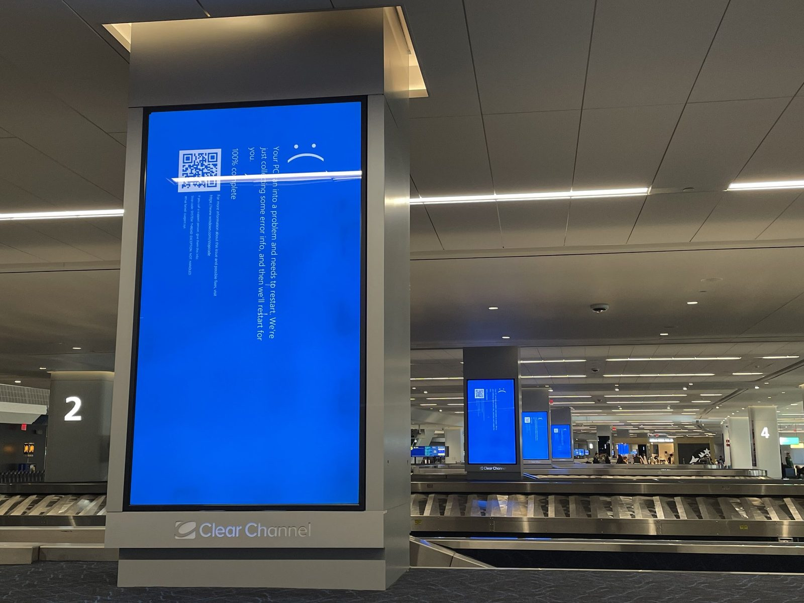

Unit 1 · Lesson 9
Software, mistakes and never losing your work
A student's hobby now runs billions of phones. One wrong command nearly deleted a whole film. Software is made by people, and people make mistakes.
The story
On 25 August 1991 Linus Torvalds, a 21-year-old student in Finland, wrote a message to an online group. He was making a free operating system, he said: "just a hobby, won't be big and professional".
He shared all the code, and thousands of people helped to improve it. The result is Linux. Today every Android phone is built on the Linux kernel, the core of the operating system. In 2021 the small helicopter Ingenuity flew on Mars with Linux on board.
.jpg){kind=link}
Linux is open source: anyone can read the code, change it and share it. Firefox, LibreOffice and the software behind Wikipedia are open source too, written by volunteers and companies together. There is a weak point: huge systems sometimes depend on a few people who work for free.
In 1998, as Pixar tells the story, a wrong command on the main computer started deleting the files of Toy Story 2. Most of the film was lost, and the backups had failed without anyone noticing. The film was saved by luck: Galyn Susman, who was working from home after having a baby, had a copy on her computer.

On 19 July 2024 a security company, CrowdStrike, sent out a faulty update. About 8.5 million Windows computers crashed, according to Microsoft. Airports, hospitals and banks saw blue error screens. It was not an attack: it was one bad file, in a program that worked deep inside the operating system.


The science
Software and updates
Software is a list of instructions written by people, so it always has some bugs (errors). An update replaces part of a program. Most updates are repairs, and many close security holes that attackers could use. So install updates soon. But an update can go wrong too: that is why companies test it first and send it to a few computers before all of them.
A file: a name, the bits, an address
A file is a set of bits with a name, kept in storage (the pantry). The extension is the end of the name, like .docx, .jpg or .mp3. It is a label: it tells the OS which app opens the file. It is not the truth: if you rename photo.jpg to photo.docx, the bits are still a photo. The path is the full address of a file, from the drive through each folder to the name, for example C:\Users\Student\Documents\ICT\Rossi_Anna_Unit1.docx.
- The cook = CPU core
- The metronome = clock (GHz)
- The countertop = cache
- The workbench = RAM
- The pantry = storage (SSD / HDD)
The naming rule
Use Surname_Name_Task.docx, for example Rossi_Anna_Essay.docx. Who, what, no spaces, no "final". Names like final.docx, final_v2_REAL.docx or Document1.docx tell nobody what is inside.
Backup 3-2-1
Keep three copies, on two kinds of storage, with one somewhere else. For example: your phone, your laptop at home, and the cloud. The Recycle Bin is not a backup: it is on the same disk, and it gets emptied. A synced folder is not a backup either: sync copies your mistakes, so if you delete a photo on one device, it disappears everywhere. And test your backup: Pixar had backups too.
Check now
Quick questions. You see the answer at once.
A synced cloud folder is a backup.
True or false?
Which file name follows the naming rule?
- final_v2_REAL.docx
- Rossi_Anna_Essay.docx
- my essay (3).docx
Most software updates are mainly about…
- new colours and icons
- fixing bugs and closing security holes
- making the computer slower
Try it
Click the drive, then the folders, then the file, to build the full path. Then test some file names with the naming checker.
Paper version
Build the path of Anna Rossi's ICT homework: C:\Users\Student\Documents\ICT\Rossi_Anna_Unit1.docx. Read it from the left: C: is the drive; Users, Student, Documents and ICT are folders, one inside the other; Rossi_Anna_Unit1 is the name and .docx is the extension (a Word document). Naming checker: Rossi_Anna_Unit1.docx is good (surname, name, task, no spaces). compito finale (2).docx is bad: spaces, no name, "finale".
Your turn
Exercises
From ★☆☆ (easy) to ★★★ (hard). Use a hint if you are stuck.
-
Exercise 1 ★☆☆
Put the parts of this path in order, from the drive to the file.
- C:
- Documents
- ICT
- Rossi_Anna_Unit1.docx
- Student
- Users
-
Exercise 2 ★☆☆
Match each extension to the kind of file.
- .docx — ?
- .jpg — ?
- .xlsx — ?
- .mp3 — ?
- .pptx — ?
-
Exercise 3 ★★☆
If you rename holiday.jpg to holiday.docx, the photo becomes a Word document.
True or false?
-
Exercise 4 ★☆☆
In the 3-2-1 rule, how many copies must be kept somewhere else (not in the same place)?
-
Exercise 5 ★★☆
Which plan follows the 3-2-1 rule?
- the phone + a USB stick in the same bag + the Recycle Bin
- the phone + the laptop at home + a copy in the cloud
- the phone + a synced cloud folder only
-
Exercise 6 ★☆☆
What saved most of Toy Story 2 in 1998?
- Pixar's backup system
- a copy on an employee's computer at home
- a copy on a DVD in a bank
-
Exercise 7 ★★☆
Anna Rossi's ICT homework about Linux is called final_v2_REAL.docx. Rename it with the naming rule, and say what was wrong with the old name.
-
Exercise 8 ★★★
On 19 July 2024 one update crashed about 8.5 million Windows computers. Why could one file stop the whole computer? And why should you still install updates?
In one sentence
Software is written by people: name your files well, keep three copies, and update.
Words of the chapter
- update
- a change to a program, mostly repairs and security fixes aggiornamento
- file
- a set of bits with a name, kept in storage file
- path
- the full address of a file: drive, folders, name percorso
- extension
- the end of a file name (.jpg, .docx): a label the OS reads estensione
- naming rule
- Surname_Name_Task.docx: who, what, no spaces regola dei nomi
- backup 3-2-1
- three copies, two kinds of storage, one somewhere else backup 3-2-1
- sync
- keeping the same files on several devices; it copies mistakes too sincronizzazione
- open source
- software anyone can read, change and share open source